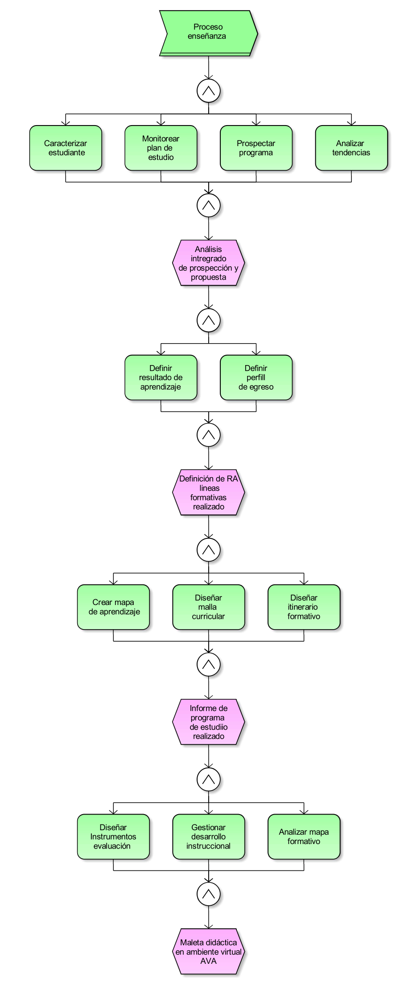
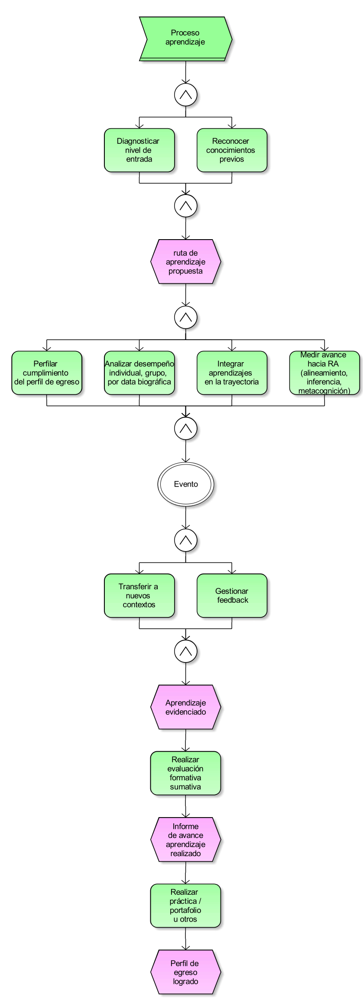
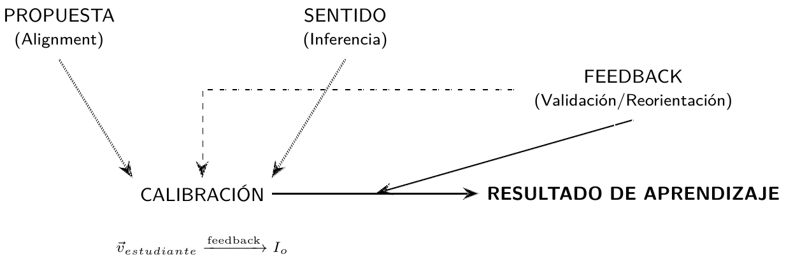

Análisis de tendencias de evaluación del proceso de aprendizaje
Evaluación en tiempo real y competencias inferidas de abstracts académicos.
Rob de la Vega VRA - SPT / Duoc UC.
ALCANCE DE ESTUDIO DE TENDENCIAS DE EVALUACION DE APRENDIZAJE
Este reporte investiga la madurez pedagógica de las innovaciones tecnológicas en Educación Superior mediante Procesamiento de Lenguaje Natural (NLP) y análisis vectorial. El estudio evalúa si la digitalización actual transforma el aprendizaje o si solo optimiza un enfoque basado en la enseñanza, basándose en la cuantificación de la tarea esencial del aprendizaje. Se identifican tres hallazgos críticos:
- Inercia del control: Alta concentración de tecnologías (IA, Analítica) para un diagnóstico estático, evidenciando un vacío operativo en la fase de iteración y cierre de brecha.
- Desbalance de la trayectoria: Existe una limitación del monitoreo inicial, pero una ausencia sistémica de trazabilidad longitudinal que conecte el aula (sesión -- resultado de aprendizaje y el perfil de egreso profesional).
- Simulación de innovación: La proximidad semántica revela que muchas herramientas de vanguardia mantienen un ADN basado en la enseñanza, sin desplazar la acción hacia el proceso de aprendizaje de alineamiento, inferencia y metacognición.
En conclusión, la frontera de la Educación Superior no es la adopción de más tecnología, sino el alineamiento del algoritmo con la etapa de operación y transferencia para que el estudiante sea el centro efectivo de su formación.
INFERENCIAS DE COMPETENCIAS DESDE ABSTRACTS DE JOURNALS ACADÉMICOS
La evolución de la tecnología en la Educación Superior ha planteado una interrogante fundamental: ¿estamos ante una verdadera transformación del aprendizaje o simplemente ante una optimización digital de un modelo aun centrado en la enseñanza? Este reporte aborda dicha problemática mediante el uso del Procesamiento de Lenguaje Natural (NLP) y análisis vectorial, herramientas que permiten realizar una "matematización" de las tareas esenciales del aprendizaje. A través de la identificación de inferencias extraídas de abstracts científicos, el estudio desvela cómo la madurez pedagógica de la innovación actual se encuentra en una encrucijada entre el potencial técnico y la inercia de la estructura centrada en la enseñanza.
Los hallazgos de esta investigación señalan tres brechas críticas: una alta concentración de tecnologías para diagnósticos estáticos que no logran cerrar el ciclo de aprendizaje (inercia del control), una falta de trazabilidad que conecte el proceso de aula con el resultado de aprendizaje y el perfil de egreso (desbalance de la trayectoria) y una persistencia de ADN tradicional en herramientas de vanguardia (simulación de innovación).
En este contexto, se presenta la siguiente tabla de inferencia, centrada en el concepto de assessment en educación superior, para ilustrar cómo la proximidad semántica y el análisis de datos pueden orientar el alineamiento del algoritmo hacia una formación donde el estudiante sea el centro efectivo del aprendizaje. Se infiere desde abstracts teniendo en cuenta las siguientes dimensiones que componen una competencia: action, object, purpose, context y technology.
EJEMPLO DE SECUENCIAS DE ENSEÑANZA APRENDIZAJE
Las siguientes secuencias constituyen el mapa genético (criterios de clasificación) que subyace en el estudio, permitiendo discernir si una tecnología se aplica para el Proceso de Enseñanza o para la transformación cognitiva del estudiante (Proceso de Aprendizaje). Al establecer esta distinción, el estudio deja de medir simples herramientas para evaluar intencionalidades. Este enfoque permite identificar brechas donde la innovación técnica no se traduce en una mejora real de la trayectoria formativa, facilitando una auditoría crítica sobre la profundidad de la transformación digital institucional.
En la práctica, estas secuencias operan como anclas semánticas para el análisis vectorial mediante Inteligencia Artificial (NLP). Cada registro del dataset es contrastado contra un "Vector de Referencia del Aprendizaje" para determinar su índice de proximidad con el cumplimiento de objetivos, logros de aprendizaje, o cumplimiento del perfil de egreso. Así, el sistema no solo valida la presencia de una plataforma, sino su capacidad real para generar procesos complejos como la metacognición o la inferencia, convirtiendo los flujos diseñados en la métrica de rigor para ponderar el éxito de cada intervención educativa.


LAS COMPETENCIAS DE EVALUACIÓN INFERIDAS EN UN ESPACIO VECTORIAL
Este estudio va más allá del análisis descriptivo tradicional mediante la aplicación de Geometría de la Información y Análisis de Desplazamiento Vectorial. En este modelo, cada registro de competencias inferidas desde abstracts (journals académicos) no es un punto estático, sino un estado con una dirección y fuerza específica ("empuje").
Se propone un enfoque basado en Geometría de la Información y Análisis de Desplazamiento Vectorial. La idea es tratar las competencias inferidas como un estado dentro de un espacio vectorial y medir no dónde está, sino hacia dónde empuja la fuerza de su acción.
Transformación vectorial de agencialidad.
En lugar de un clustering tradicional por similitud de palabras, se propone una proyección de contraste operacional: en vez de agrupar textos por palabras parecidas, esta técnica convierte cada acción educativa en un vector (una flecha en el espacio) y mide hacia dónde apunta esa flecha (si apunta a estar centrada en el estudiante o en la enseñanza) para evaluar su verdadera dirección pedagógica, independientemente de las palabras que use.
Embeddings condicionales: Transforma cada triada (action, object, purpose) en un vector v ∈ ℝⁿ usando un modelo de lenguaje (como BERT o ADA) ajustado a los enfoques educativos que se estudian.
Definir ejes semánticos (Proyección de Gram-Schmidt): Definir dos vectores ortogonales ideales: se crean dos direcciones de referencia perpendiculares entre sí (una que representa el "enfoque en la enseñanza" y otra relacionado con el "enfoque en el aprendizaje") para que cualquier acción educativa pueda ubicarse y medirse según su orientación relativa entre estos dos polos.
- \(\vec{E}\): El vector "Enseñanza".
- \(\vec{A}\): El vector "Aprendizaje".
Cálculo del índice de operatividad (\(I_o\)): Para cada registro \(\vec{v}_i\) de inferencias se calcula su proyección escalar:
$$I_o = \frac{v_i \cdot \vec{A}}{\|v_i\| \cdot \|\vec{A}\|}$$
Esto da un valor entre -1 y 1 que indica qué tan aprendizaje-operativo es el registro, independientemente de que use tecnología avanzada. La Lógica: Si una investigación dice usar "Machine Learning" (tecnología) para mejorar el rendimiento (propósito) mediante evaluación (acción), el vector resultante muestra una tensión. Visualización de flujo: Los puntos no solo están ahí. Tienen una flecha que indica su potencialidad.
Propuesta de visualización: El embudo de trazabilidad:
Se propone un grafo de transferencia de momento:
- Nodos: La secuencia del proceso.
- Aristas (Flujos): Basado en las inferencias, se trazan líneas que muestran cómo fluye la intención de la investigación.
¿Por qué esto nos ayuda? Porque matemáticamente permite distinguir entre:
- Innovación Inercial: Mucha tecnología, pero dirección vectorial hacia la enseñanza.
- Innovación Disruptiva: Quizás poca tecnología (estadística simple), pero con una dirección vectorial clara hacia aprendizaje: objetivos resultados de aprendizaje o perfil de egreso.
2. Análisis de flujo de tensores (Vector Fields):
Se utiliza Visualización de Flujo (Streamline Plot). Cada investigación posee una potencialidad representada por un vector:
- Innovación enseñanza: Alta magnitud tecnológica pero dirección vectorial hacia la enseñanza.
- Innovación aprendizaje: Dirección clara hacia la iteración y logrando un impacto real en el aprendizaje.
El embudo de trazabilidad: Este modelo permite visualizar gráficamente dónde se "corta" el flujo de la innovación de aprendizaje. Matemáticamente, evidencia cómo la corriente pedagógica suele estancarse en la medición de progreso, mostrando el límite de innovación de enseñanza y aprendizaje, lo que confirma la brecha entre la técnica y la operación sistémica.
VISUALIZAR LAS TENDENCIAS DE EVALUACION
El análisis de la trayectoria de innovación mediante un vector permite visualizar el índice de operatividad \(I_o\) donde el equilibrio óptimo se sitúa en la línea de alineamiento pedagógico (\(y = 0)\). En este punto, la tecnología y el propósito educativo convergen en una armonía funcional, permitiendo que las herramientas digitales actúe como habilitador natural del proceso de enseñanza. Cualquier desplazamiento hacia el extremo se interpreta como una desviación: hacia un lado, la innovación instrumental, donde la sofisticación técnica supera la utilidad pedagógica real. Hacia el otro, la zona tradicional, donde el proceso carece del impulso transformador que las nuevas metodologías pueden ofrecer.
Este hallazgo no señala una falla, sino una oportunidad de sintonía fina para la Educación Superior. Al identificar que herramientas de vanguardia, como la IA o el análisis de datos, se encuentran actualmente en una etapa de "ajuste instrumental", el estudio traza la ruta hacia el cuadrante de transformación real. El objetivo es desplazar la acción desde el simple diagnóstico estático hacia un modelo de acompañamiento longitudinal. Así, al centrar el diseño de los algoritmos en el cierre efectivo de brecha y en la metacognición del estudiante, se logra que la innovación no sea un fin en sí mismo, sino el motor que garantiza un aprendizaje profundo, conectado y plenamente alineado con el perfil de egreso profesional.
AGRUPAR APRENDIZAJE SOBRE EVALUACION
El Mapa de innovación educativa 3D es fundamental porque añade una capa de profundidad necesaria para validar este avance: la multi-dimensionalidad. Mientras el análisis vectorial nos hablaba de equilibrio y dirección, el mapa 3D permite visualizar cómo los distintos proyectos y tecnologías se agrupan en "clusters", ofreciendo una visión más rica de la realidad educativa.
Este mapa refuerza la tendencia trazada:
1. Visualización del "alto impacto". El mapa permite identificar claramente el proyecto que ha logrado romper la inercia y se sitúan en la zona de alto impacto. Estos no son solo puntos aislados, sino evidencias de que es posible alinear la tecnología con una transformación pedagógica profunda. Ver estos datos en tres ejes nos permite entender que el éxito no depende solo de la tecnología, sino de su combinación con una acción clara y un propósito definido en el contexto adecuado.
2. De la dispersión a la cohesión. Al observar el mapa, podemos notar cómo ciertos grupos de innovaciones (como el uso de analítica predictiva o lenguaje natural) comienzan a agruparse. Esta formación de "clusters" sugiere que la comunidad educativa está encontrando un estándar de éxito. Ya no es un esfuerzo individual y disperso, sino una tendencia colectiva hacia un modelo de aprendizaje basado en la evidencia, lo que facilita la replicabilidad de esta buena práctica.
3. El Valor de la proximidad semántica en 3D. El mapa visualiza qué tan cerca están las herramientas actuales de un resultado de aprendizaje deseado. Si los puntos se mueven hacia el cuadrante superior, significa que la "distancia" entre la intención pedagógica y la ejecución tecnológica se está acortando. Es la representación visual de la sintonía fina de la que hablábamos: una trayectoria que deja de ser meramente instrumental para volverse estratégica y centrada en el estudiante. En definitiva, si el análisis vectorial es nuestra brújula para mantener el rumbo en el equilibrio (\(y = 0)\), el Mapa 3D es como un radar: muestra dónde están los casos de éxito, qué tan lejos se está de la transformación real y, sobre todo, confirma que el avance hacia una educación más operativa y conectada es una realidad tangible y medible.
OBTENIENDO APRENDIZAJES
El ranking evidencia un claro predominio de competencias orientadas al diagnóstico y análisis del aprendizaje por sobre aquellas vinculadas a la intervención pedagógica. Las tareas mejor posicionadas —como diagnosticar el estado inicial y analizar el desempeño longitudinal— reflejan una lógica evaluativa centrada en la medición y caracterización del aprendizaje. Esto sugiere que el sistema de evaluación prioriza la generación de información más que su uso transformador en el proceso formativo.
En segundo lugar, se observa una presencia intermedia de competencias relacionadas con la articulación curricular, particularmente en la integración del aprendizaje dentro de la trayectoria formativa. Sin embargo, su posición en el ranking indica que esta dimensión no constituye el eje dominante. Esto revela una tensión entre evaluar el aprendizaje como un proceso aislado y comprenderlo como parte de un sistema formativo más amplio, donde la evaluación debiera cumplir un rol estructurante.
Finalmente, las competencias asociadas al cierre del ciclo de aprendizaje (como la retroalimentación, la mejora iterativa, la corrección del error y la transferencia a nuevos contextos) presentan una baja frecuencia relativa. Esta distribución sugiere una debilidad en los procesos de uso pedagógico de la evaluación, especialmente en su capacidad para promover ajustes, profundización y transferencia del aprendizaje. En conjunto, el ranking describe un modelo evaluativo robusto en diagnóstico, pero limitado en su función formativa y de mejora continua.
CONCEPTO SINTESIS EVALUACION DEL PROCESO DE APRENDIZAJE
La inferencia como "sentido". En los datos, se observa que términos como natural language, predictive analytics o VR aparecen con alta frecuencia. Sin embargo, el objeto revela que estas tecnologías no operan solas. En la sesión, el estudiante realiza una inferencia del sentido. Es decir, intenta entender para qué se usa esa tecnología. Si la tecnología (el "object" o "technology" de tu tabla) no se traduce en un propósito claro, la inferencia falla y el vector se desvía hacia la "innovación instrumental".
El alignment como "propuesta". La tabla de competencias muestra una estructura clara: "action + object + purpose". Esto es lo propuesto. El esquema muestra que el "alignment" es el esfuerzo del estudiante por sincronizar su respuesta con esa estructura técnica. La tendencia en los abstracts sugiere que cuando el "alignment" es puramente procedimental (por ex. "usar un software"), el logro de aprendizaje es superficial. La verdadera calibración ocurre cuando el estudiante alinea su acción con el propósito profundo del estudio.
La calibración y el índice de operatividad \(I_o\). Aquí es donde el análisis vectorial y el esquema convergen. En el mapa 3D, se vió clusters de "alto impacto". Aquí se representa como una calibración exitosa. La tendencia indica que el éxito (el logro de aprendizaje) depende de que el Feedback ocurra en el cierre de la sesión para corregir el ángulo del vector \(\vec{v}_{estudiante}\). Sin ese feedback, el sistema tiende por defecto a la "inercia del control", donde se mide mucho pero se transforma poco.

El flujo hacia el logro. El esquema expresa la transición desde la matematización de tareas (extraída de los abstracts) hacia la operación en el aula. Lo importante no es el contenedor (la plataforma), sino la relación vectorial y el flujo de información entre los actores. Este objeto es el "modelo de despliegue" del estudio: toma la estructura rígida de la tabla de competencias y la pone en movimiento dentro del contexto dinámico de una sesión de aprendizaje, permitiendo que la calibración sea el punto donde la tecnología de los abstracts se convierte en resultado real.
CONCLUSIONES
A partir de la evidencia analizada en los 1631 registros de abstracts, el análisis vectorial del índice de operatividad y el mapeo de innovación en 3D, se presentan las siguientes cinco conclusiones finales que sintetizan el estado actual y la trayectoria de la evaluación en la Educación Superior:
1. Transición de la medición de resultados a la ingeniería de procesos. La evidencia muestra un predominio de acciones como Monitor, Analyze y Predict sobre términos tradicionales de evaluación sumativa (grade, score). Este hallazgo confirma que el foco se ha desplazado desde la calificación final hacia una analítica de aprendizaje en tiempo real. El sistema ya no busca simplemente certificar un estado de conocimiento, sino intervenir en la trayectoria mediante una función de evaluación continua que optimiza el proceso mientras este ocurre.
2. La personalización como eje de alto impacto pedagógico. El análisis de clustering revela que los niveles más altos de impacto (eje Z en el mapa 3D) están directamente vinculados a la tríada "model-predict-classify". La innovación más efectiva no es la que digitaliza contenidos, sino la que utiliza la inferencia de datos para adaptar la instrucción a las necesidades individuales. El éxito del estudiante depende de que el sistema sea capaz de "setear" condiciones de aprendizaje personalizadas, alejándose definitivamente de los enfoques estandarizados y unidireccionales.
3. La Inteligencia artificial como habilitador de la operatividad \(I_o\). Existe una correlación directa entre la sofisticación tecnológica (Machine Learning, NLP, Deep Learning) y la capacidad de las instituciones para alcanzar el punto de equilibrio \(y = 0\). Mientras las tecnologías descriptivas tradicionales se limitan a reportar el pasado, la adopción de IA permite la "matematización de tareas" necesaria para generar alertas tempranas y diagnósticos preventivos. La IA ha dejado de ser una herramienta de soporte para convertirse en el motor que permite una evaluación operativa y funcional.
4. Integración de la evaluación en el "flujo de trabajo" del estudiante. Las tendencias inferidas indican que la evaluación ha dejado de ser un evento discreto o aislado (como un examen final) para integrarse en el flujo de la sesión. El uso de datos multimodales e interacciones en tiempo real en entornos híbridos demuestra que la evaluación es ahora un vector que se autocorrige por feedback. Esta integración permite que la "calibración" del estudiante respecto a la propuesta docente ocurra de forma natural y constante, mejorando la precisión del logro de aprendizaje.
5. Priorización de procesos cognitivos y afectivos sobre contenidos declarativos. Las competencias con mayor puntuación de innovación se centran en objetos abstractos como la carga cognitiva \(cognitive\ load\), el compromiso \(engagement\) y el pensamiento crítico. Esto sugiere que el núcleo de la evaluación contemporánea se ha desplazado del "qué sabe el estudiante" al "cómo aprende y qué siente mientras lo hace". Comprender la expereincia de aprendizaje y los vacíos de conocimiento durante la inferencia de sentido de la clase es hoy más crítico para el éxito académico que la mera retención de información.
BIBLIOGRAFÍA
- Biggs, J., & Tang, C. (2011). Teaching for Quality Learning at University (4th ed.). Open University Press.
- Sadler, D. R. (1989). Formative assessment and the design of instructional systems. Instructional Science, 18(2), 119–144.
- Siemens, G. (2013). Learning analytics: The emergence of a discipline. American Behavioral Scientist, 57(10), 1380–1400. https://doi.org/10.1177/0002764213498851
- Mikolov, T., Chen, K., Corrado, G., & Dean, J. (2013). Efficient estimation of word representations in vector space. arXiv preprint arXiv:1301.3781.
- Devlin, J., Chang, M.-W., Lee, K., & Toutanova, K. (2019). BERT: Pre-training of deep bidirectional transformers for language understanding. In Proceedings of NAACL-HLT 2019 (pp. 4171–4186). https://doi.org/10.18653/v1/N19-1423
- Blei, D. M. (2012). Probabilistic topic models. Communications of the ACM, 55(4), 77–84. https://doi.org/10.1145/2133806.2133826
- Amari, S. (2016). Information Geometry and Its Applications. Springer. https://doi.org/10.1007/978-4-431-55978-8
- Nielsen, F. (2020). An elementary introduction to information geometry. Entropy, 22(10), 1100. https://doi.org/10.3390/e22101100
- Gašević, D., Dawson, S., & Siemens, G. (2015). Let’s not forget: Learning analytics are about learning. TechTrends, 59(1), 64–71. https://doi.org/10.1007/s11528-014-0822-x